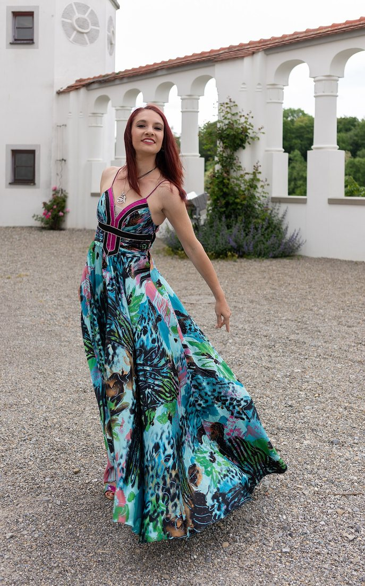
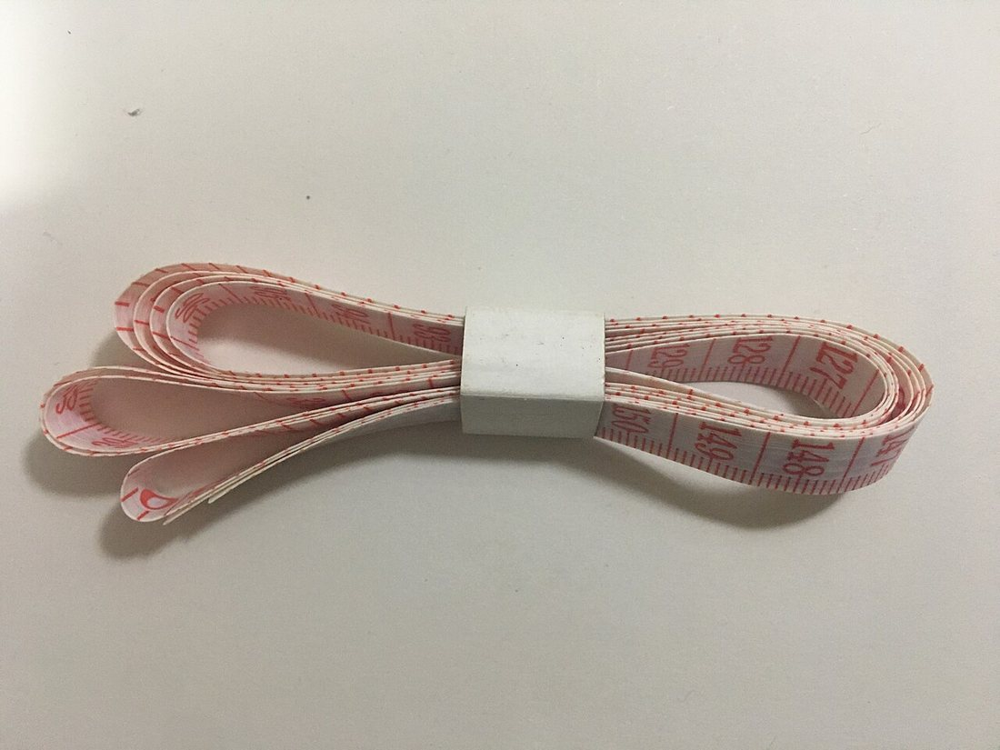
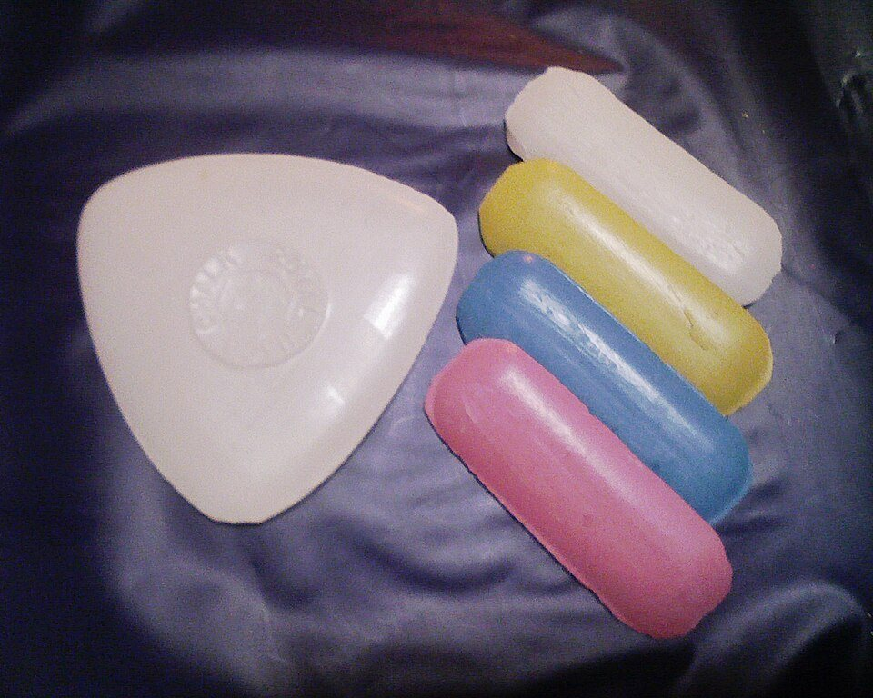
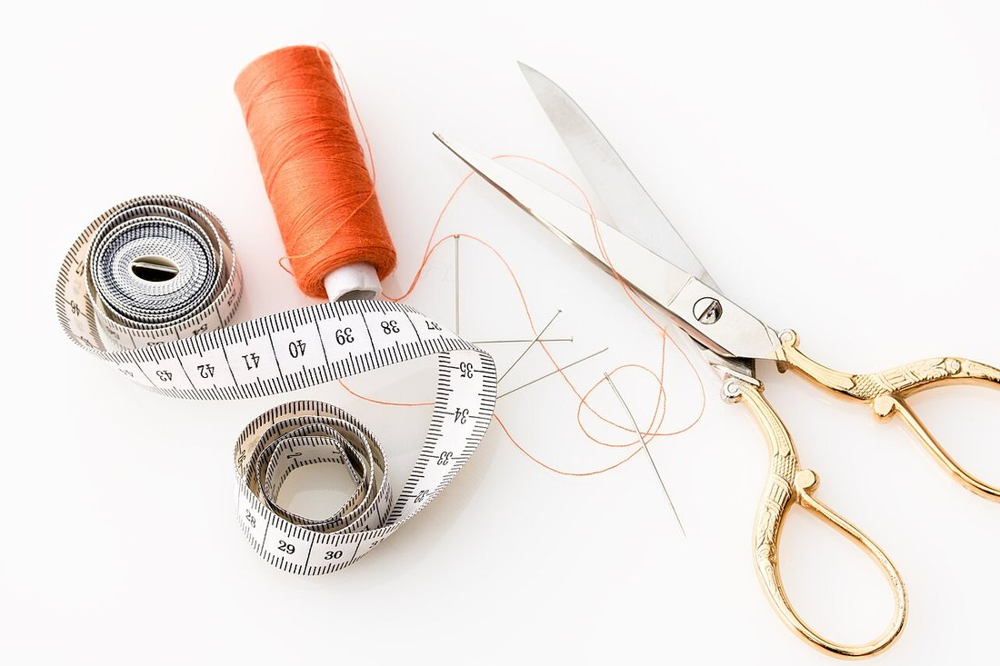
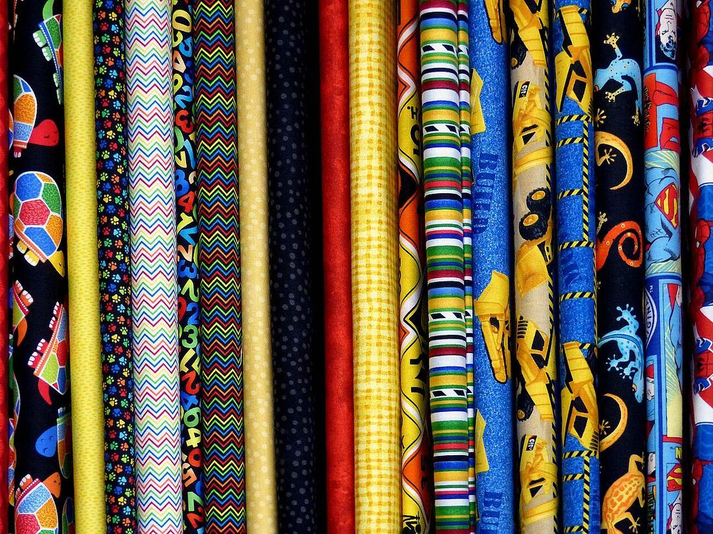
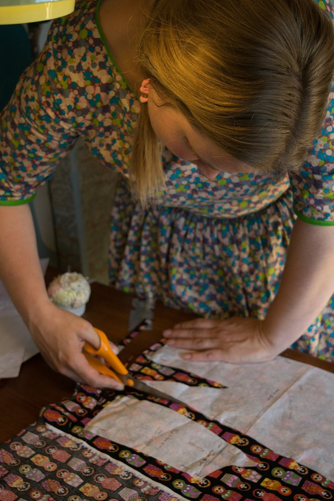
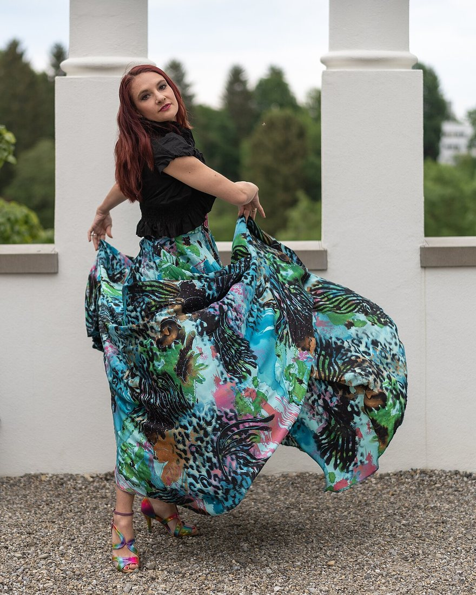

Көркем еңбек · Тігін ісі · Сызба құру Art & Craft · Sewing · Pattern Drafting Художественный труд · Швейное дело · Построение чертежа
📐 Сызба құру: «жарты күн» юбкасы
📐 Drafting the Half-Circle Skirt
📐 Построение чертежа: юбка-полусолнце
Екі өлшем мен бір формула — әдемі, кең юбканың сызбасы дайын. Two measurements and one formula — and the pattern for a wide, flowing skirt is ready. Две мерки и одна формула — и чертёж пышной, летящей юбки готов.
«Жарты күн» деген не? What is a half-circle skirt? Что такое «полусолнце»?
Юбка-полусолнце («жарты күн») — белден кесіліп, төменге қарай кеңейіп, толқынды қатпарлар (фалда) түзетін юбка. Оның сызбасы — жарты шеңбер: матаны жайып салғанда юбка 180°-қа жазылады. Белдемше неғұрлым кең болса, фалдалар соғұрлым мол әрі әдемі болады. Сызбаны салу үшін бар болғаны екі өлшем мен бір формула жеткілікті — сондықтан бұл бастаушыға ең қолайлы юбка пішіні. A half-circle (half-sun) skirt is cut at the waist and flares out into soft, wavy folds. Its pattern is a half-circle: spread flat, the skirt opens to 180°. The wider the spread, the fuller and more graceful the folds. To draft it you need only two measurements and one formula — which makes it the friendliest skirt shape for a beginner. Юбка-полусолнце — это юбка, отрезная по талии и расширяющаяся книзу мягкими волнистыми складками (фалдами). Её чертёж — это половина круга: разложенная на ткани, юбка раскрывается на 180°. Чем шире разворот, тем пышнее и красивее ложатся фалды. Чтобы построить чертёж, нужны всего две мерки и одна формула — поэтому это самый удобный фасон для начинающих.

Не қажет? Құрал-жабдық What you need: tools Что нужно: инструменты
🔍 Үлкейту үшін суретті басыңыз. 🔍 Tap a photo to enlarge it. 🔍 Нажмите на фото, чтобы увеличить.

Сантиметрлік таспаTape measureСантиметровая лента
Дене өлшемдерін алу үшін.For taking body measurements.Чтобы снять мерки с фигуры.

Тігінші борTailor's chalkПортновский мел
Матаға сызбаны түсіруге.To draw the pattern on cloth.Чтобы перенести чертёж на ткань.

Қайшы, ине, жіпScissors & pinsНожницы и булавки
Пішу мен тігуге арналған.For cutting and sewing.Для раскроя и шитья.

МатаFabricТкань
Жұмсақ, түсетін мата таңдаңыз.Choose soft, draping cloth.Берите мягкую, драпирующуюся.
📏 Қосымша: ұзын сызғыш не сантиметр, циркуль рөлін атқаратын жіп пен бор (центрден доға салу үшін), үтік және түйреуіштер.Also handy: a long ruler, a piece of string with chalk tied on (it works like a compass to draw the arcs from the centre), an iron and pins.Пригодятся также: длинная линейка, шнур с привязанным мелом (он работает как циркуль — чертит дуги из центра), утюг и булавки.
1-қадам. Өлшем алу Step 1. Take the measurements Шаг 1. Снимаем мерки
«Жарты күн» юбкасына бар болғаны екі өлшем керек:A half-circle skirt needs just two measurements:Для юбки-полусолнце нужны всего две мерки:
Бел орамы (ОТ).Waist circumference.Обхват талии (ОТ). Сантиметрді белдің ең жіңішке жеріне тегіс, тым қыспай ораңыз.Wrap the tape around the narrowest part of the waist, snug but not tight.Оберните ленту по самому узкому месту талии — плотно, но не туго.
Юбка ұзындығы (Дю).Skirt length.Длина юбки (Дю). Белден қалаған төменгі шекараға дейінгі тік қашықтық.The vertical distance from the waist down to the desired hem.Расстояние по вертикали от талии до желаемого низа.
💡 Белге 0–1 см бостық қосуға болады — юбка қыспай тұрады. Мысалы: ОТ = 64 см, Дю = 50 см.You may add 0–1 cm of ease to the waist so it isn't tight. Example: waist = 64 cm, length = 50 cm.К талии можно добавить 0–1 см на свободу, чтобы не давило. Пример: ОТ = 64 см, Дю = 50 см.
2-қадам. Радиусты есептеу Step 2. Calculate the radius Шаг 2. Рассчитываем радиус
Кіші (бел) радиусы:Small (waist) radius:Малый радиус (по талии):
(жарты шеңбер үшін, π ≈ 3,14)(for a half-circle, π ≈ 3.14)(для полукруга, π ≈ 3,14)
Үлкен (төменгі) радиус:Large (hem) radius:Большой радиус (по низу):
Мысал: ОТ = 64 см, Дю = 50 смExample: waist = 64 cm, length = 50 cmПример: ОТ = 64 см, Дю = 50 см
Енді бір центрден (О) екі доға саламыз: ішкі — R-мен (бел), сыртқы — R₂-мен (төменгі шек). Жіптің бір ұшын О-ға бекітіп, екінші ұшындағы бормен доға жүргізген ыңғайлы.Now, from one centre (O), draw two arcs: the inner one with radius R (waist), the outer one with R₂ (hem). The easiest way is to pin one end of the string at O and draw with the chalk on the other end.Теперь из одного центра (О) проводим две дуги: внутреннюю радиусом R (талия) и внешнюю радиусом R₂ (низ). Удобнее всего закрепить конец шнура в точке О и чертить мелом на другом конце.
🧮 Неге 3,14? Толық шеңбердің ұзындығы — 2πR. «Жарты күн» белі — жарты шеңбер, ұзындығы πR. Ол ОТ-ға тең болуы керек: πR = ОТ, демек R = ОТ ÷ π = ОТ ÷ 3,14. (Толық «күн» юбкасында бел — толық шеңбер, сондықтан R = ОТ ÷ 6,28.)Why 3.14? A full circle's length is 2πR. The waist of a half-sun skirt is a half-circle, length πR. It must equal the waist: πR = ОТ, so R = ОТ ÷ π = ОТ ÷ 3.14. (In a full "sun" skirt the waist is a whole circle, so R = ОТ ÷ 6.28.)Почему 3,14? Длина полной окружности — 2πR. Талия «полусолнца» — это полуокружность длиной πR. Она должна равняться ОТ: πR = ОТ, значит R = ОТ ÷ π = ОТ ÷ 3,14. (У полной юбки-«солнце» талия — целая окружность, поэтому R = ОТ ÷ 6,28.)
3-қадам. Сызбаны салу Step 3. Draw the pattern Шаг 3. Строим чертёж
Матаны екі қабат етіп бүктеп, бүктеме бұрышын центр О етіп аламыз:Fold the fabric in two and use the corner of the fold as centre O:Складываем ткань вдвое и берём угол сгиба за центр О:
О нүктесінен R = 20,5 см доға салып, бел сызығын (Т) аламыз.From point O draw an arc with R = 20.5 cm — this is the waist line (T).Из точки О чертим дугу радиусом R = 20,5 см — это линия талии (Т).
Сол О-дан R₂ = 70,5 см доға салып, төменгі сызықты (Н) аламыз.From the same O draw an arc with R₂ = 70.5 cm — the hem line (H).Из той же О чертим дугу радиусом R₂ = 70,5 см — это линия низа (Н).
Екі доғаны қырларымен (радиустармен) тұйықтап, жарты сақина пішінін аламыз.Close the two arcs with the side radii to get a half-ring shape.Замыкаем дуги боковыми радиусами — получаем форму полукольца.
Тігіс пен төменгі бүкпеге 1–4 см қосымша қосамыз.Add 1–4 cm seam and hem allowances all around.Прибавляем 1–4 см на швы и подгибку низа.
«Күн», «жарты күн», «клиньевая» — салыстыру Sun, half-sun and gored — compared «Солнце», «полусолнце» и клиньевая — сравнение
Радиус формуласы юбканың қанша градусқа жайылатынына байланысты. The radius formula depends on how many degrees the skirt spreads over. Формула радиуса зависит от того, на сколько градусов разворачивается юбка.
| Фасон | Разворот | Формула радиуса R | Пышность / расход ткани |
|---|---|---|---|
| Солнце | 360° (полный круг) | R = ОТ ÷ 6,28 | Самые пышные фалды; ткани нужно больше всего. |
| Полусолнце | 180° (половина круга) | R = ОТ ÷ 3,14 | Умеренно пышная, лёгкие фалды; экономнее «солнца». |
| Полуклёш (¼) | 90° (четверть) | R = ОТ ÷ 1,57 | Небольшое расширение книзу; ткани мало. |
| Клиньевая | из клиньев | строится по клиньям | Пышность задаётся числом клиньев; расход средний. |
| Фасон | Жайылуы | R радиус формуласы | Пышность / мата шығыны |
|---|---|---|---|
| Күн | 360° (толық шеңбер) | R = ОТ ÷ 6,28 | Ең мол фалда; мата ең көп кетеді. |
| Жарты күн | 180° (жарты шеңбер) | R = ОТ ÷ 3,14 | Орташа кең, жеңіл фалда; «күннен» үнемді. |
| Жарты клёш (¼) | 90° (ширек) | R = ОТ ÷ 1,57 | Төменге аздап кеңейеді; мата аз кетеді. |
| Сыналы (клиньевая) | сыналардан | сына бойынша құрылады | Кеңдік сына санымен реттеледі; шығын орташа. |
| Style | Spread | Radius formula R | Fullness / fabric use |
|---|---|---|---|
| Full sun | 360° (full circle) | R = waist ÷ 6.28 | Fullest folds; uses the most fabric. |
| Half-sun | 180° (half-circle) | R = waist ÷ 3.14 | Moderately full, light folds; thriftier than the sun. |
| Quarter flare | 90° (quarter) | R = waist ÷ 1.57 | Slight flare to the hem; little fabric. |
| Gored | made of gores | built from panels | Fullness set by the number of gores; medium use. |
4-қадам. Пішу және тігу Step 4. Cut and sew Шаг 4. Раскрой и пошив
Бүктеп бекіту.Fold & pin.Сложить и закрепить. Матаны екі қабат бүктеп, түйреуішпен бекітеміз, сызбаны борлап түсіреміз.Fold the fabric double, pin it, and chalk the pattern onto it.Складываем ткань вдвое, скалываем булавками и переносим чертёж мелом.
Қиямыз.Cut.Вырезаем. Қосымшаны ескеріп, екі доға бойымен қиямыз.Cut along both arcs, keeping the allowances.Режем по обеим дугам, не забыв про припуски.
Белдеу.Waistband.Пояс. Бел сызығына белдеу тігіп, бүйірге сырма (молния) орнатамыз.Sew a waistband to the waist line and set a zip in the side.Притачиваем пояс к линии талии, в боковой шов вшиваем молнию.
Төменгі жиек.Hem.Низ. Юбканы бір күн ілдіріп қойып, содан кейін төменін теңестіріп бүктеп тігеміз.Let the skirt hang for a day, then level and stitch the hem.Даём юбке отвисеться сутки, затем ровняем и подшиваем низ.

✂️ Маңызды: «жарты күн» бір тұтас бөліктен (бір тігіспен) немесе екі бөліктен (екі бүйір тігісімен) пішілуі мүмкін — матаның еніне байланысты. Қиғаш жіп (косая) бойындағы жерлер созылмауы үшін юбканы ілдіріп қою керек.Important: a half-sun can be cut as one whole piece (one seam) or as two pieces (two side seams) — it depends on the fabric width. Because some edges fall on the bias, let the skirt hang before hemming so it won't stretch unevenly.Важно: «полусолнце» можно выкроить из одного полотна (один шов) или из двух (два боковых шва) — зависит от ширины ткани. Часть срезов идёт по косой, поэтому перед подшивкой юбке дают отвисеться, чтобы низ не растянулся неровно.
Нәтиже: фалда қалай «билейді» The result: how the folds "dance" Результат: как «танцуют» фалды

💡 Есте сақта 💡 Remember 💡 Запомните
Екі өлшемTwo measurementsДве мерки
Бел орамы (ОТ) және юбка ұзындығы (Дю) — осы екеуі жеткілікті.Waist (ОТ) and length (Дю) — these two are enough.Обхват талии (ОТ) и длина (Дю) — этих двух достаточно.
Басты формулаThe key formulaГлавная формула
R = ОТ ÷ 3,14, содан кейін R₂ = R + Дю. Бір центрден екі доға.R = ОТ ÷ 3.14, then R₂ = R + Дю. Two arcs from one centre.R = ОТ ÷ 3,14, затем R₂ = R + Дю. Две дуги из одного центра.
Қосымша мен отыруAllowances & hangingПрипуски и отвес
Тігіске қосымша қос, юбканы ілдіріп қойып барып төменін теңестір.Add seam allowances and let it hang before levelling the hem.Добавь припуски и дай отвисеться перед выравниванием низа.